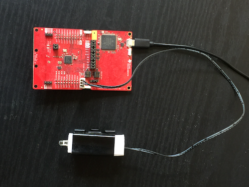
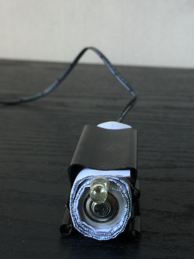

This IR Bridge works with iOS App FzRemote
Project Home Page https://github.com/FounderSG/ZRC
What you need:
1. Ti CC2640R2 LaunchPad
2. IR led (0$ if you have a couple of old remote controls, 1$ if you need to buy them)

3. wires and iron
Connection:
IR led have only two pin, connect one pin to GND and another pin to DIO7.
if you are not sure which pin is GND, just try, reverse connection won't burn your circuit.
IR is invisible to human eyes, but you can see it from phone camera.
DIO7 also connect to green LED, if no IR led you can see green LED blink when IR firing.
if IR led connected, green LED stop blink because IR led have a much lower resistence.
Final Product:

I use a clipper, one AA battery, and some paper to make IR led stand firmly.

Known Problem:
IR signal weak due to IR led drive directly by GPIO and this GPIO also connect to green led.
if you are hardware expert you may want to add amplifying circuit.
Comments !